공인중개사-2차 (2006-10-29 기출문제)
1과목: 임의구분
1. 공인중개사법상의 부동산거래의 신고에 관한 설명 중 옳은 것은?
- 신고의무자는 매매 또는 임대에 관한 거래계약서를 작성한 거래당사자 및 중개업자이다.
- 거래계약 체결일로부터 60일 이내에 당해 토지 또는 건축물 소재지 관할 시장ㆍ군수 또는 구청장에게 신고하여야 한다.
- 주택법상 주택거래신고 대상인 주택을 중개한 경우에도 공인중개사법에 따라 부동산거래의 신고를 하여야 한다.
- 신고의무자가 신고필증을 교부받은 때에는 매수인은 부동산등기특별조치법에 따른 검인을 받은 것으로 본다.
- 신고필증을 교부받은 부동산거래계약이 무효가 된 경우 신고의무자는 부동산거래계약 해제 등 신고서를 작성하여 제출하여야 한다.
(정답률: 알수없음)

2. 중개대상물 확인ㆍ설명의무에 관한 설명 중 틀린 것은?
- 중개업자는 중개대상물 확인ㆍ설명서 사본을 3년간 보존하여야 한다.
- 중개업자는 거래계약서를 작성하는 때에는 중개대상물 확인ㆍ설명서를 작성하여 거래당사자에게 교부하여야 한다.
- 중개대상물 확인ㆍ설명서에 중개수수료 및 실비의 금액과 그 산출내역을 기재하여야 한다.
- 중개업자는 확인ㆍ설명을 위하여 필요한 경우 중개대상물의 매도의뢰인 등에게 당해 중개대상물의 상태에 관한 자료를 요구할 수 있다.
- 확인ㆍ설명의무를 위반하거나 확인ㆍ설명서 보존의무를 위반한 중개업자는 과태료 처분의 대상이 된다.
(정답률: 50%)
3. 거래당사자가 부동산거래계약 신고를 하는 경우 신고하여야 할 사항이 아닌 것은?
- 중개업자의 인적 사항 및 중개사무소 개설등록에 관한 사항
- 계약일ㆍ중도금지급일 및 잔금지급일
- 거래대상 부동산의 종류 및 계약대상 면적과 실제 거래가격
- 계약의 조건이나 기한이 있는 경우 그 조건 또는 기한
- 거래대상 부동산의 소재지ㆍ지번 및 지목
(정답률: 46%)
4. 부동산거래가격 검증체계의 구축 및 운영주체는?
- 건설교통부장관
- 재정경제부장관
- 특별시장ㆍ광역시장ㆍ도지사
- 국세청장
- 시장ㆍ군수ㆍ구청장
(정답률: 50%)
5. 부동산 중개수수료에 관한 설명 중 틀린 것은?
- 중개수수료는 중개대상에 따라 주택과 주택 외로 구분하여 다른 기준을 적용한다.
- 주택의 경우 중개수수료는 중개내용에 따라 매매ㆍ교환과 임대차 등으로 구분하여 다른 기준을 적용한다.
- 주택의 소재지와 중개사무소의 소재지가 다른 경우에는 중개수수료는 주택의 소재지를 관할하는 시ㆍ도의 조례에서 정한 기준에 따른다.
- 교환일 경우 그 중 거래금액이 큰 중개대상물의 가액을 거래금액으로 한다.
- 동일한 중개대상물에 대하여 동일 당사자 간에 매매를 포함한 둘 이상의 거래가 동일 기회에 이루어지는 경우에는 매매계약에 관한 거래금액만을 적용한다.
(정답률: 알수없음)
6. 중개업자는 물론 소속공인중개사, 중개보조원 및 중개업자인 법인의 사원ㆍ임원에게도 적용되는 것은?
- 중개사무소등록증 등의 게시의무
- 중개사무소 이중 개설등록의 금지
- 인장등록의무
- 품위유지 및 공정의무
- 비밀누설금지의무
(정답률: 알수없음)
7. 중개대상물의 확인ㆍ설명의 근거자료로 제시할 수 있는 것으로서 적합하지 않은 것은?
- 공법상의 이용제한과 거래규제 - 토지이용계획확인서
- 지상권ㆍ임차권 등의 설정 - 등기부 을구
- 소유권 지분, 대지권 비율 - 공유지연명부
- 토지의 소재ㆍ지번ㆍ지목ㆍ면적 - 토지대장ㆍ임야대장
- 건축물의 현황 및 그 대지에 관한 현황 등 - 건축물대장
(정답률: 알수없음)
8. 공인중개사법상의 중개대상물에 관한 설명 중 옳은 것은?(다툼이 있으면 판례에 의함)
- 아파트 분양예정자로 선정될 수 있는 지위를 가리키는 아파트입주권은 중개대상물인 건물에 해당하는 것으로 보기 어렵다.
- 동ㆍ호수를 특정하여 분양계약이 체결된 미완성의 아파트에 대한 거래의 중개는 건물의 중개에 해당하지 않는다.
- 공장재단을 구성하는 공업소유권 및 시설 등은 각각 분리하여 중개대상물이 된다.
- 광업재단에 속한 광업권은 독립한 중개대상물이다.
- 가식의 수목이나 암석ㆍ토사는 중개대상물이다.
(정답률: 알수없음)
9. 중개업자가 대한민국 내 토지를 취득하려는 외국인에게 설명한 내용 중 틀린 것은?
- 외국인이 야생 동ㆍ식물특별보호구역의 토지를 취득하고자 할 때에는 계약체결에 앞서 허가를 받아야 한다.
- 외국인이 허가 없이 문화재보호구역 내의 토지를 취득하는 계약을 체결한 경우 그 효력이 발생하지 아니한다.
- 외국인토지법에 의하여 토지취득계약을 체결한 경우에는 계약체결일로부터 60일 이내에 신고하여야 한다.
- 외국인이 허가를 받아야 함에도 불구하고 허가를 받지 아니하고 토지취득계약을 체결한 경우에는 징역형 또는 벌금형의 대상이 된다.
- 외국인이 토지의 취득신고를 하지 아니한 경우에는 벌금형의 대상이 된다.
(정답률: 알수없음)
10. 중개대상물의 설명에 관한 기술 중 틀린 것은?
- 임대주택법의 적용대상인 임대주택의 임차인이 국외로 이주하는 경우 그 임차권을 임대사업자의 동의 없이 다른 사람에게 양도하거나 전대할 수 있다.
- 임차주택이나 임차건물의 경락이 있는 경우에도 보증금이 전액 변제되지 아니한 대항력 있는 임차권은 소멸하지 아니한다.
- 부동산 실권리자 명의 등기에 관한 법률은 명의신탁약정을 무효로 하고 있으며, 이 경우 무효는 제3자에게 대항하지 못한다고 규정하고 있다.
- 공동주택관리규약은 입주자의 지위를 승계한 자에 대하여도 그 효력이 있다.
- 정비사업의 시행으로 인하여 임차권의 설정목적을 달성할 수 없는 때에는 임차권자는 계약을 해지할 수 있다.
(정답률: 알수없음)
11. 중개업자를 대상으로 한 행정처분에 관한 설명 중 틀린 것은?
- 중개업자가 폐업신고 후 등록관청을 달리하여 다시 중개사무소 개설등록을 한 때에는 폐업신고 전의 중개업자의 지위를 승계한다.
- 폐업신고 전의 중개업자에 대한 업무정지 처분의 효과는 그 처분일로부터 3년간 재등록중개업자에게 승계된다.
- 폐업신고 전의 중개업자에 대한 과태료 처분의 효과는 그 처분일로부터 1년간 재등록중개업자에게 승계된다.
- 폐업기간이 3년을 초과한 재등록중개업자에 대하여는 폐업신고 전의 위반행위를 사유로 하는 등록취소 처분을 할 수 없다.
- 폐업기간이 1년을 초과한 재등록중개업자에 대하여는 폐업신고 전의 위반행위를 사유로 하는 업무정지 처분을 할 수 없다.
(정답률: 알수없음)
12. 공인중개사법의 내용에 관한 설명 중 옳은 것은?
- 중개업자는 다른 중개업자의 소속공인중개사ㆍ중개보조원 또는 중개업자인 법인의 사원ㆍ임원이 될 수 있다.
- 부동산거래 신고를 할 때 신고서와 함께 부동산거래계약서의 원본을 제출해야 한다.
- 모든 중개업자는 대법원규칙이 정하는 요건을 갖추어 등록하면 경매대상 부동산의 매수신청 또는 입찰신청의 대리를 할 수 있다.
- 중개법인도 다른 중개업자와 중개사무소를 공동으로 사용할 수 있다.
- 중개업자는 이동이 용이한 임시 중개시설물을 일시적으로 설치하여 사용할 수 있다.
(정답률: 알수없음)
13. 중개업에 관한 설명 중 틀린 것은?(다툼이 있는 경우 판례에 의함)
- 법인인 중개업자가 다른 중개업자를 대상으로 중개업의 경영정보를 제공하고 수수료를 받은 경우 이는 중개업에 해당되지 않는다.
- 중개업으로 인정받기 위해서는 계속ㆍ반복적 영업행위가 있어야 한다.
- 중개의뢰인이 중개업자에게 소정의 중개수수료를 지급하지 않은 경우 중개업자는 고의ㆍ과실에 의한 중개사고로 발생한 손해에 대하여 책임을 지지 않는다.
- 중개업자가 2 이상의 중개사무소를 둔 경우 중개사무소 개설등록이 취소될 수 있다.
- 저당권 설정에 관한 행위의 알선은 중개업에 해당된다.
(정답률: 알수없음)
14. 공인중개사법의 목적에 명문으로 규정되어 있지 않은 것은?
- 부동산중개업을 건전하게 지도ㆍ육성한다.
- 부동산중개 업무를 적절히 규율한다.
- 투명한 부동산거래질서를 확립한다.
- 공정한 부동산거래질서를 확립한다.
- 국민경제에 이바지한다.
(정답률: 37%)
15. 소속공인중개사에 대한 설명 중 옳은 것은?
- 법인이 아닌 중개업자의 소속공인중개사도 실무교육을 이수하여야 한다.
- 소속공인중개사는 공인중개사법에 의한 부동산거래 신고업무를 대리할 수 없다.
- 중개보조원은 소속공인중개사가 될 수 없지만 소속공인중개사는 중개업자가 될 수 있다.
- 중개업자의 과실로 중개의뢰인에게 재산상의 손해를 입힌 경우 양벌규정에 의해 소속공인중개사도 공동책임을 진다.
- 소속공인중개사를 해고하는 경우 해고일로부터 10일 이내에 등록관청에 신고하여야 한다.
(정답률: 알수없음)
16. 계약금 등의 반환채무이행의 보장에 대한 설명 중 옳은 것은?
- 중개업자는 거래의 안전을 보장하기 위하여 필요하다고 인정하는 경우 거래계약서의 작성이 완료될 때까지 계약금ㆍ중도금 또는 잔금을 예치하도록 권고해야 한다.
- 계약금 등의 반환채무이행을 보장하기 위해 이를 금융기관에 예치하는 경우 중개업자의 명의로는 할 수 없다.
- 중개업자가 계약금 등의 반환채무이행의 보장에 반하는 행위를 한 경우 중개사무소 개설등록을 취소할 수 있다.
- 우체국예금ㆍ보험에 관한 법률에 따른 체신관서도 예치기관이 될 수 있다.
- 계약금 등의 예치를 매도인이 중개업자에게 요구한 경우 이를 거절할 수 없다.
(정답률: 알수없음)
17. 공인중개사법상 중개업자 등에 대한 벌칙이 적용된 예에 관한 설명 중 틀린 것은?
- 중개사무소의 개설등록을 하지 아니하고 중개업을 한 중개업자가 1천만 원의 벌금형을 받았다.
- 중개업자가 중개사무소 이전신고 의무위반으로 30만원의 과태료 처분을 받았다.
- 공인중개사협회가 공제사업 운영실적 공시의무 위반으로 3백만원의 과태료처분을 받았다.
- 다른 사람에게 자기의 성명을 사용하여 중개업무를 하게 한 중개업자가 1천 2백만원의 벌금형을 받았다.
- 중개의뢰인과 직접 거래하였다는 이유로 중개업자가 1천 5백만원의 벌금형을 받았다.
(정답률: 55%)
18. 공인중개사협회에 대한 설명 중 빈칸에 들어 갈 내용이 바르게 짝지어진 것은?(순서대로 A, B, C)
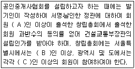
- 300, 100, 20
- 300, 100, 50
- 300, 200, 50
- 600, 100, 20
- 600, 200, 20
(정답률: 알수없음)
19. 중개계약에 관한 설명 중 틀린 것은?
- 전속중개계약은 법정서식에 따라야 한다.
- 중개계약시 유상임을 명시하지 않더라도 중개수수료 청구권은 인정된다.
- 우리나라에서는 일반중개계약보다 전속중개계약이 업무범위나 책임소재를 명확히 할 수 있어 주로 이용되고 있다.
- 순가중개계약을 체결했더라도 법정수수료를 초과하여 받지 않은 경우에는 처벌할 수 없다.
- 건설교통부장관은 일반중개계약의 표준이 되는 서식을 정하여 그 사용을 권장할 수 있다.
(정답률: 24%)
20. 중개업자가 주택법상의 주택거래신고지역 내의 주택을 거래하면서 중개의뢰인에게 설명한 내용 중 빈칸에 알맞은 것은?
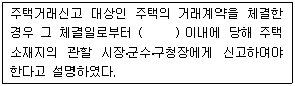
- 15일
- 30일
- 45일
- 60일
- 90일
(정답률: 알수없음)
21. 중개법인의 분사무소에 대한 설명 중 옳은 것은?
- 다른 법률의 규정에 따라 중개업을 할 수 있는 법인의 분사무소인 경우에는 공인중개사를 책임자로 두지 않아도 된다.
- 주된 사무소의 소재지를 포함한 시·군·구별로 설치하되, 시ㆍ군ㆍ구별로 1개소를 초과할 수 없다.
- 분사무소를 설치하는 경우 이를 설치하고자 하는 시ㆍ군ㆍ구에 신고하여야 한다.
- 분사무소 설치를 신고하는 자는 건설교통부장관이 결정ㆍ공고하는 수수료를 납부하여야 한다.
- 분사무소 책임자는 공인중개사여야 하지만 실무교육을 받아야 할 의무는 없다.
(정답률: 46%)
22. 중개업자가 주택임대차 중개를 의뢰받고 임차의뢰인에게 설명한 내용 중 옳은 것은?
- 임차권등기명령의 집행에 의한 임차권등기가 경료된 주택을 그 이후에 임차한 소액임차인이 대항요건을 갖추었을 경우 우선변제권이 있다.
- 소액보증금 우선변제의 범위는 지역에 관계없이 기준이 동일하다.
- 2년 미만의 임대차기간은 이를 2년으로 보기 때문에 2년 미만으로 한 임대차계약은 법적 효력이 없다.
- 임대차가 종료되면 임차인의 보증금반환이 이루어지지 않아도 임대차관계는 종료된다.
- 일시사용을 위한 임대차임이 명백한 경우에는 주택임대차보호법의 적용을 받지 않는다.
(정답률: 알수없음)
23. 다음 주택임대차 사례에서 중개업자가 중개의뢰인들로부터 받을 수 있는 중개수수료 최고한도액의 총액은?
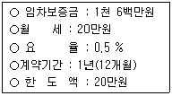
- 180,000원
- 184,000원
- 300,000원
- 360,000원
- 400,000원
(정답률: 42%)
24. 부동산거래정보망에 대한 설명 중 옳은 것은?
- 부동산거래정보사업자는 지정을 받은 날부터 3월 이내에 운영규정을 정하여 시ㆍ도지사의 승인을 받아야 한다.
- 부동산거래정보망은 중개업자와 의뢰인 상호간에 부동산매매 등에 관한 정보의 공개와 유통을 촉진하기 위한 제도다.
- 부동산거래정보망을 설치ㆍ운영할 자로 지정받으려면 가입한 중개업자가 보유하고 있는 주된 컴퓨터의 용량 및 성능을 확인할 수 있는 서류가 필요하다.
- 정당한 사유 없이 지정받은 날부터 2년 이내에 부동산거래정보망을 설치ㆍ운영하지 아니하면 지정을 취소하여야 한다.
- 중개업자는 부동산거래정보망을 통해 거래하는 경우 거래가 완성된 때에는 지체 없이 이를 당해 거래정보사업자에게 통보하여야 한다.
(정답률: 알수없음)
25. 중개업자가 주택임차의뢰인에게 임차목적물의 경매시 배당우선순위에 대하여 설명한 것 중 올바르게 나열된 것은?
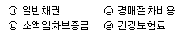
- (ㄴ)-(ㄷ)-(ㄱ)-(ㄹ)
- (ㄴ)-(ㄷ)-(ㄹ)-(ㄱ)
- (ㄷ)-(ㄱ)-(ㄴ)-(ㄹ)
- (ㄷ)-(ㄴ)-(ㄹ)-(ㄱ)
- (ㄹ)-(ㄴ)-(ㄷ)-(ㄱ)
(정답률: 알수없음)
26. 법인인 중개업자가 할 수 있는 업무 중 옳은 것은?
- 농업용 창고시설의 관리업을 하고 있다.
- 20호의 단지로 구성된 단독주택 분양을 대행하고 있다.
- 공인중개사 시험준비생들에게 중개업 창업을 위한 경영기법을 제공하고 있다.
- 도배ㆍ이사업체를 운영하면서 고객들에게 저렴하게 서비스를 제공하고 있다.
- 주택법에 따라 공급된 150세대의 공동주택 중에서 입주자 모집결과 신청자 수가 공급하는 주택의 수에 미달된 15세대의 분양을 대행하고 있다.
(정답률: 알수없음)
27. 중개업자의 중개계약에 관한 내용 중 틀린 것은?
- 서면에 의한 중개계약은 중개업자의 책임과 의무를 명확히 하고 최선을 다해 서비스를 제공하도록 유도하는 효과가 있다.
- 중개의뢰인은 중개의뢰내용을 명확하게 하기 위하여 중개업자에게 일반중개계약서의 작성을 요청할 수 있다.
- 전속중개계약을 체결한 때에는 부동산거래정보망에 거래예정금액, 권리관계사항, 권리자의 주소ㆍ성명 등 인적사항에 관한 정보, 중개대상물의 종류 등을 공개해야 한다.
- 중개업자는 중개의뢰인과 전속중개계약을 체결한 때에는 2주일에 1회 이상 업무처리사항을 문서로 통지하도록 규정되어 있다.
- 중개의뢰인은 중개업자와 일반중개계약을 체결하였다 하더라도 중개대상물의 거래에 관한 중개를 다른 중개업자에게도 의뢰할 수 있다.
(정답률: 알수없음)
28. 부동산의 셀링포인트(Selling Point)에 관한 설명 중 틀린 것은?
- 부동산이 가지고 있는 여러 가지 특징 중 고객인 중개의뢰인의 욕구를 충족시켜줄 수 있는 특징을 말한다.
- 각각의 셀링포인트는 중개대상물이 갖는 고유의 특성이라고 할 수 있지만 모든 특성이 절대적인 것은 아니기 때문에 상대성이 있을 수 있다.
- 부동산가격 및 임료수준의 적정성 등은 기술적 측면의 셀링포인트에서 가장 중요한 내용이다.
- 과다한 셀링포인트는 중개의뢰인의 매수의사결정에 결정적으로 작용할 수 있는 셀링포인트 제시효과를 떨어뜨릴 수 있다.
- 주택의 경우 교육여건, 투자가치 등을 셀링포인트로 활용할 수 있다.
(정답률: 알수없음)
29. 중개업자가 중개대상물을 중개하면서 설명한 내용 중 옳은 것은?
- 주거ㆍ상업 또는 공업지역에서의 개발행위로 인하여 기반시설의 처리ㆍ공급 또는 수용능력이 부족할 것으로 예상되는 지역 중 기반시설의 설치가 곤란한 지역이 기반시설부담구역으로 지정되면 부담금이 부과될 수 있다.
- 월별 집값상승률이 전국소비자물가상승률 보다 30% 이상 높은 지역 중 2개월간 집값상승률이 전국 평균보다 30% 이상 높으면 투기과열지구로 지정되어 양도소득세가 중과세 된다.
- 산지관리법에 의해 산지에서 석재를 굴취ㆍ채취하려면 원칙적으로 산림청장의 채석허가를 받아야 한다.
- 주택법에 의하여 건설ㆍ공급되는 주택을 부정한 방법으로 공급받은 경우 이미 체결된 주택의 공급계약이 취소될 수는 있으나 행정형벌의 대상이 되지는 않는다.
- 도시지역과 그 주변지역의 무질서한 시가화를 방지하고 계획적ㆍ단계적인 개발을 도모하기 위해 개발제한구역으로 지정되면 일정기간 동안 시가화가 유보된다.
(정답률: 알수없음)
30. 중개업자의 금지행위에 해당하지 않는 것은?
- 의뢰인의 토지를 중개하면서 알게 된 정보를 이용하여 그의 토지를 직접 사들였다.
- 의뢰인의 상가를 그의 요구에 맞추어 거래를 성사시켜준 대가로 법정수수료 상한액을 받고, 별도로 미술작품 1점을 받았다.
- 업무상 알게 된 개발업자로부터 입수한 확정되지 않은 개발계획을 이용하여 타인에게 그 지역 임야를 매입하도록 권유하여 매매계약을 체결하였다.
- 매매계약을 중개함에 있어서 매도의뢰인의 급박한 사고로 인해 그의 위임을 받아 매수의뢰인과 매매계약을 체결하였다.
- 의뢰인에게 아파트 매매계약을 체결하게 한 후 이전등기를 하지 아니하고 타인에게 다시 매매계약을 체결하게 하였다.
(정답률: 알수없음)
31. 중개업자에 행한 지도ㆍ감독에 대한 설명 중 옳은 것은 모두 몇 개인가?
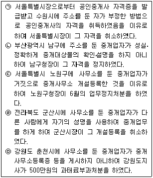
- 1개
- 2개
- 3개
- 4개
- 5개
(정답률: 알수없음)
32. 공인중개사법상 중개업자에 대한 벌칙 규정 내용이 바르게 연결된 것으로만 짝지어진 것은?
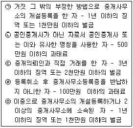
- (ㄱ), (ㄴ), (ㄷ)
- (ㄱ), (ㄴ), (ㅁ)
- (ㄱ), (ㄹ), (ㅁ)
- (ㄴ), (ㄷ), (ㄹ)
- (ㄷ), (ㄹ), (ㅁ)
(정답률: 알수없음)
33. 공인중개사법상 포상금제에 대한 설명 중 틀린 것은?
- 포상금의 지급에 소요되는 비용 중 국고에서 보조할 수 있는 비율은 100분의 50 이내로 한다.
- 등록관청이 포상금의 지급을 결정하고 그 결정일부터 1월 이내에 포상금을 지급하여야 한다.
- 포상금은 1건당 50만원으로 한다.
- 등록관청은 하나의 사건에 대하여 2건 이상의 신고 또는 고발이 접수된 경우에는 건수에 따라 균등하게 배분하여 신고 또는 고발한 자에게 포상금을 지급한다.
- 포상금은 신고 또는 고발사건에 대하여 검사가 공소제기 또는 기소유예의 결정을 한 경우에 한하여 지급한다.
(정답률: 알수없음)
34. 인장의 등록에 관한 내용 중 틀린 것은?
- 중개업자 및 소속공인중개사는 업무를 개시하기 전에 중개행위에 사용할 인장을 등록관청에 등록하여야 한다.
- 등록한 인장을 변경한 경우에는 변경일로부터 10일 이내에 그 변경된 인장을 등록관청에 등록하여야 한다.
- 인장의 등록은 인감증명법과 상업등기처리규칙에 따른 인감증명서의 제출로 갈음한다.
- 분사무소에서 사용할 인장의 경우 상업등기처리규칙의 규정에 따라 법인의 대표자가 보증하는 인장을 등록할 수 있다.
- 중개업자가 작성한 계약서에 등록된 인장을 사용하지 않으면 업무정지처분을 받을 수 있다.
(정답률: 알수없음)
35. 공인중개사법상 중개사무소의 개설등록을 할 수 있는 자만으로 묶인 것은?
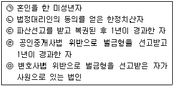
- (ㄱ), (ㄴ)
- (ㄱ), (ㄹ)
- (ㄴ), (ㄷ)
- (ㄷ), (ㅁ)
- (ㄹ), (ㅁ)
(정답률: 알수없음)
36. 중개업의 휴업과 폐업에 관한 설명 중 옳은 것은?
- 징집으로 인한 입영의 경우에는 6월을 초과하여 휴업할 수 있다.
- 휴업과 폐업의 신고는 전자문서에 의하여 할 수 있다.
- 중개법인의 분사무소는 주사무소와 별도로 휴업할 수 없다.
- 휴업기간 중에는 중개사무소를 이전할 수 없다.
- 중개업자가 사망한 때에는 그 중개업자와 세대를 같이 하고 있는 자가 등록관청에 폐업신고를 하여야 한다.
(정답률: 알수없음)
37. 중개업자가 중개대상물을 조사ㆍ확인하여 설명서에 기재할 환경조건의 요소와 입지조건의 요소에 해당되는 것은 각각 몇 개인가?
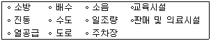
- 환경조건 3개, 입지조건 3개
- 환경조건 3개, 입지조건 4개
- 환경조건 4개, 입지조건 3개
- 환경조건 4개, 입지조건 4개
- 환경조건 4개, 입지조건 5개
(정답률: 25%)
38. 공인중개사의 매수신청대리인 등록 등에 관한 규칙의 내용에 관한 설명 중 틀린 것은?
- 매수신청대리인이 되고자 하는 중개업자는 중개사무소가 있는 곳을 관할하는 지방법원의 장에게 매수신청대리인 등록을 하여야 한다.
- 매수신청대리인 등록을 하고자 하는 중개업자는 등록신청일 전 1년 이내에 중개사무소가 있는 곳을 관할하는 지방법원의 장이 지정하는 교육기관에서 부동산경매에 관한 실무교육을 이수하여야 한다.
- 중개업자는 매수신청대리행위를 함에 있어서 매각장소 또는 집행법원에 직접 출석하여야 한다.
- 매수신청대리인으로 등록한 중개업자는 동일 부동산에 대하여 이해관계가 다른 2인 이상의 대리인이 되는 행위를 하여서는 아니된다.
- 중개업자는 매수신청대리에 관하여 위임인으로부터 예규에서 정한 수수료의 범위 안에서 소정의 수수료를 받는다.
(정답률: 알수없음)
39. 중개업자가 입목에 관한 법률 소정의 입목에 관하여 중개하면서 설명한 내용 중 틀린 것은?
- 소유권보존의 등기를 받을 수 있는 수목의 집단은 입목등록원부에 등록된 것에 한정된다.
- 입목의 소유자는 토지와 분리하여 입목을 양도할 수 있다.
- 입목을 목적으로 하는 저당권의 효력은 입목을 벌채한 경우에 그 토지로부터 분리된 수목에 대하여 미치지 않는다.
- 입목의 경매 기타 사유로 토지와 그 입목이 각각 다른 소유자에게 속하게 된 경우에는 토지소유자는 입목소유자에 대하여 지상권을 설정한 것으로 본다.
- 입목을 저당권의 목적으로 하고자 하는 자는 그 입목을 보험에 붙여야 한다.
(정답률: 알수없음)
40. 공인중개사법상 부동산거래의 신고절차 등에 관한 설명 중 옳은 것은?
- 신고서에는 원칙적으로 거래당사자가 공동으로 서명 또는 날인하여야 한다.
- 신고를 하고자 하는 자는 신고인의 신분을 확인할 수 있는 신분증명서를 시ㆍ도지사에게 내보여야 한다.
- 신고서는 거래당사자가 공동으로 제출하여야 한다.
- 전자문서에 의한 신고의 경우 거래당사자 중 1인의 위임을 받은 자가 대리하여 신고할 수 있다.
- 중개업자가 신고의무자인 경우 소속공인중개사가 이를 대리하여 전자문서에 의한 신고를 할 수 있다.
(정답률: 알수없음)
2과목: 임의구분
41. 지적법령상 용어의 정의 중 옳은 것은?
- “소관청”이라 함은 지적공부를 관리하는 지방자치단체인 시ㆍ군ㆍ구를 말한다.
- “지목”이라 함은 토지의 주된 형상에 따라 토지의 종류를 구분하여 지적공부에 등록한 것을 말한다.
- “축척변경”이라 함은 지적도에 등록된 경계점의 정밀도를 높이기 위하여 작은 축척을 큰 축척으로 변경하여 등록하는 것을 말한다.
- “토지의 표시”라 함은 지적공부에 토지의 소재, 지번, 소유자, 지목, 면적, 경계 또는 좌표를 등록한 것을 말한다.
- “좌표”라 함은 지적측량기준점 또는 경계점의 위치를 경위도좌표로 표시한 것을 말한다.
(정답률: 알수없음)
42. 지적법령상 지적공부에 등록하는 토지의 표시사항에 대한 설명으로 틀린 것은?
- 등록전환하여 토지의 지번을 부여할 때 그 지번부여지역안에서 인접토지의 본번에 부번을 붙이는 것이 원칙이다.
- 소관청이 직권으로 토지표시의 이동현황을 조사하여 지목 등을 결정할 때에는 토지이용현황조사계획을 수립한다.
- 지목은 일필일지목의 원칙, 주지목추종의 원칙, 일시변경 불변의 원칙을 적용하여 설정한다.
- 면적단위는 제곱미터로 하며, 경계점좌표등록부에 등록하는 지역의 토지면적은 제곱미터 이하 한자리 단위이다.
- 도로 및 구거 등의 토지에 절토된 부분이 있는 경우에는 그 경사면의 상단부를 지상경계로 결정한다.
(정답률: 알수없음)
43. 지목의 설정에 대한 다음의 설명 중 틀린 것은?
- 실외에 기능교육장을 갖춘 자동차운전학원의 부지는 “잡종지”로 한다.
- 경부고속철도와 접속하여 민간자본으로 건축된 역사(驛舍)의 부지는 “대”로 한다.
- 일반공중의 위락ㆍ휴양 등에 적합한 시설물을 종합적으로 갖춘 어린이놀이터는 “유원지”로 한다.
- 주차장법 제19조제4항의 규정에 의하여 시설물의 부지인근에 설치된 부설주차장은 “주차장”으로 한다.
- 육상에 수산생물 양식을 위하여 인공적으로 설치한 시설물의 부지는 “양어장”으로 한다.
(정답률: 알수없음)
44. 지적법령상 토지이동신청 특례 등에 관한 설명 중 틀린 것은?
- 도시개발사업으로 인하여 사업의 착수신고가 된 토지는그 사업이 완료되는 때까지 사업시행자외의 자가 토지의 이동을 신청할 수 없다.
- 농어촌정비사업으로 인하여 토지의 이동이 있는 때에는 그 사업시행자가 소관청에 그 이동을 신청하여야 한다.
- 주택법에 의한 공동주택의 부지를 지목변경하는 경우 집합건물의 소유 및 관리에 관한 법률에 의한 관리인이 토지소유자의 신청을 대위할 수 있다.
- 소관청이 지적측량적부(재)심사 의결서 사본을 송부받아 그 내용에 따라 지적공부의 경계를 정정하는 경우에는 이해관계인의 승낙서를 받아야 한다.
- 주택법의 규정에 의한 주택건설사업의 시행자가 파산으로 토지의 이동을 신청할 수 없는 때에는 그 주택의 시공을 보증한 자 또는 입주예정자 등이 신청할 수 있다.
(정답률: 알수없음)
45. 지적측량의뢰인이 지적측량에 따른 손해배상금으로 보험금을 지급받으려고 보험회사에 청구하는 때에 첨부하여야 하는 서류로서 옳은 것은?
- 지적측량수행자가 소관청에 제출한 지적측량수행계획서
- 지적측량 손해배상 대상 토지의 개별공시지가확인서
- 지적측량의뢰인이 제출한 지적측량적부심사청구서 사본
- 지적측량수행자가 시행한 지적측량방법에 대한 의견서
- 지적측량의뢰인과 지적측량수행자간의 손해배상합의서
(정답률: 10%)
46. 지적측량에 의하여 필지의 면적을 측정하여야 하는 대상으로 틀린 것은?
- 임야대장 등록지를 토지대장 등록지로 옮기는 경우
- 축척이 다른 토지의 합병을 위해 축척변경을 하는 경우
- 미터법의 시행으로 면적을 환산하여 등록하는 경우
- 경계침범 부분을 시정하기 위해 분할 등록하는 경우
- 미등록된 토지를 새로이 지적공부에 등록하는 경우
(정답률: 알수없음)
47. 지적법령상 지번의 구성 및 부여방법에 대한 설명으로 옳은 것은?
- 지번은 소관청이 지번부여지역별로 남동에서 북서로 순차적으로 부여한다.
- 지번은 아라비아숫자로 표기하되, 임야대장 및 임야도에 등록하는 토지의 지번은 숫자 앞에 “임”자를 붙인다.
- 지번은 본번과 부번으로 구성하되, 본번과 부번 사이에 “-” 또는 “의”로 표시한다.
- 분할의 경우에는 분할후의 필지중 1필지의 지번은 분할전의 지번으로 하고, 나머지 필지의 지번은 본번의 최종부번의 다음 순번으로 부번을 부여한다.
- 합병의 경우에는 원칙적으로 합병대상 지번중 후순위의 지번을 그 지번으로 하되, 본번으로 된 지번이 있는 때에는 본번중 선순위의 지번을 합병후의 지번으로 한다.
(정답률: 30%)
48. 축척변경위원회의 구성 및 기능에 관한 사항으로 틀린 것은?
- 축척변경위원회는 위원의 3분의 1이상을 토지소유자로 하여야 한다.
- 축척변경위원회는 축척변경시행계획에 관한 사항을 심의ㆍ의결한다.
- 축척변경위원회는 5인 이상 10인 이내의 위원으로 구성한다.
- 축척변경위원회는 청산금의 산정에 관한 사항을 심의ㆍ의결한다.
- 축척변경위원회는 청산금의 이의신청에 관한 사항을 심의ㆍ의결한다.
(정답률: 알수없음)
49. 지적법령상 토지의 이동신청 및 정리에 관한 다음의 설명 중 틀린 것은?
- 합병하고자 하는 2필지의 토지가 다른 합병요건을 충족하는 때에는 1필지의 토지에 전세권의 등기가 있을 경우에도 합병신청을 할 수 있다.
- 합병하고자 하는 2필지의 토지가 다른 합병요건은 충족하나 소유자의 주소가 서로 다른 경우에 합병신청을 할 수 없다.
- 지적공부의 등록사항이 토지이동정리결의서의 내용과 다르게 정리된 경우에는 소관청이 직권으로 조사하여 이를 정정할 수 있다.
- 임야도에 등록된 토지가 사실상 형질변경되었으나 지목변경을 할 수 없는 경우 지목변경없이 등록전환을 신청할 수 있다.
- 토지소유자가 토지이동신청 의무를 이행하지 않아 소관청이 직권으로 조사ㆍ측량하여 지적공부를 정리한 때에는 소관청이 이에 소요되는 지적공부정리 신청수수료를 토지소유자에게 징수할 수 있다.
(정답률: 알수없음)
50. 지적공부에 관한 전산자료를 이용 또는 활용하고자 하는 자는 다음 중 누구의 심사를 거쳐야 하는가?(단, 지방자치단체의 장이 승인을 신청하는 경우는 제외한다)
- 관계중앙행정기관의 장
- 시ㆍ도지사
- 시장ㆍ군수ㆍ구청장
- 지적정보센터장
- 한국전산원장
(정답률: 19%)
51. 지적법령상 지적측량업의 등록을 할 수 없는 결격 사유가 아닌 것은?
- 금치산자 또는 한정치산자
- 파산자로서 복권되지 아니한 자
- 금고이상의 실형을 선고받고 그 집행이 종료되거나 집행이 면제된 날로부터 3년이 경과되지 아니한 자
- 형의 집행유예선고를 받고 그 유예기간이 경과되지 아니한 자
- 지적측량업의 등록이 취소된 후 2년이 경과되지 아니한 자
(정답률: 27%)
52. 다음 지적도에 대한 설명으로 틀린 것은?
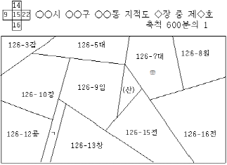
- 지적도의 도면번호는 제15호이다.
- 126-10의 지목은 공장용지이다.
- 126-7에 제도된 “⊕”은 지적삼각점 위치의 표시이다.
- (산)으로 표기된 토지는 임야대장등록지이다.
- 126-9의 동쪽 경계는 0.2㎜ 폭으로 제도한다.
(정답률: 16%)
53. 대지권등록부의 등록사항으로만 나열된 것은?
- 토지의 소재ㆍ지번ㆍ지목ㆍ전유부분의 건물표시
- 대지권 비율ㆍ소유권 지분ㆍ건물명칭ㆍ개별공시지가
- 집합건물별 대지권등록부의 장번호ㆍ토지의 이동사유ㆍ대지권 비율ㆍ지번
- 건물명칭ㆍ대지권 비율ㆍ소유권 지분ㆍ토지의 고유번호
- 지번ㆍ대지권 비율ㆍ소유권 지분ㆍ도면번호
(정답률: 알수없음)
54. 등기절차에 관한 설명 중 틀린 것은?
- 저당권에 기한 담보권실행을 위한 경매개시결정등기는 갑구에 기재한다.
- 판결에 의한 등기는 승소한 등기권리자 또는 등기의무자만으로 이를 신청할 수 있다.
- 채권자가 채무자를 대위하여 등기를 신청한 경우에는 등기관은 등기를 완료한 때에 채권자에게 등기필증을 교부하여야 한다.
- 등기관은 등기신청의 흠결을 당일 보정할 수 있는 경우에도 이유를 기재한 결정으로써 그 신청을 각하하여야 한다.
- 1980년 12월 31일 이전에 등기된 예고등기는 2006년 6월 1일부터 90일 이내에 이해관계인으로부터 권리가 존속한다는 뜻의 신고가 없을 때에는 말소하여야 한다.
(정답률: 10%)
55. 집합건물등기에 관한 설명 중 틀린 것은?
- 집합건물의 전유부분에 대한 소유권이전등기를 경료하면 구조상 공용부분의 소유권을 취득한다.
- 벽에 의하여 물리적으로 분리되지 않은 평면매장(平面賣場)도 일정한 요건을 갖춘 경우에는 구분소유권등기를 할 수 있다.
- 집합건물의 등기용지에 대지권의 등기를 한 경우 등기관은 그 권리의 목적인 토지의 등기용지 중 해당 구의 사항란에 대지권인 취지를 직권으로 등기하여야 한다.
- 구분건물에 관한 등기를 함에 있어서 복도나 계단은 구분소유권의 목적으로 등기할 수 없다.
- 구조상ㆍ이용상 독립성이 있는 건물을 소유한 자는 그 건물을 구분건물로서 등기하여야 한다.
(정답률: 28%)
56. 변경등기에 관한 설명 중 옳은 것은?
- 건물의 구조가 변경된 경우에는 변경등기를 신청하기 전에 먼저 건축물대장의 기재사항을 변경하여야 한다.
- 행정구역 명칭의 변경이 있을 때에는 등기명의인의 신청에 의하여 변경된 사항을 등기하여야 한다.
- 건물의 면적이 변경된 경우에는 부기등기의 방법에 의하여 변경등기를 한다.
- 등기명의인의 표시를 변경하는 경우에는 등기권리자와 등기의무자가 공동으로 등기를 신청하여야 한다.
- 건물의 구조가 변경되어 변경등기를 하는 경우에는 종전사항을 말소하지 않는다.
(정답률: 알수없음)
57. 근저당권등기에 관한 설명 중 틀린 것은?
- 피담보채권의 확정 전에 채권자의 지위가 전부 양도된 경우에는 근저당권이전등기의 등기원인을 계약양도로 기재한다.
- 동일부동산에 대한 하나의 근저당권설정계약서로 여러 건의 근저당권설정등기신청을 하는 것은 허용되지 않는다.
- 채권최고액의 변경등기를 신청하는 경우에는 등기신청수수료를 납부하지 아니한다.
- 채무자변경등기신청시 후순위저당권자의 동의 없이 근저당권의 채무자변경등기를 할 수 있다.
- 근저당권등기말소신청시 그 등기명의인표시에 변경사유가 있더라도 신청서에 그 변경을 증명하는 서면을 첨부함으로써 등기명의인표시변경등기를 생략할 수 있다.
(정답률: 알수없음)
58. 등기신청의 각하사유 중 ‘사건이 등기할 것이 아닌 때’에 해당하지 않는 것은?
- 하나의 부동산에 관하여 경료된 소유권보존등기 중 일부분에 관한 등기만을 따로 말소신청한 경우
- 주택 전부에 대한 전세권설정등기 후 동일 주택에 대하여 주택임차권등기의 촉탁이 있는 경우
- 예고등기의 원인이 된 판결의 확정 후 그 판결에 의한 등기의 말소등기를 신청하지 아니하고 예고등기만의 말소신청을 한 경우
- 합유자 중 1인의 지분에 대한 가압류기입등기촉탁이 있는 경우
- 공동상속인 중 일부만이 당사자가 된 소송의 확정판결로 협의분할에 의한 상속등기를 신청한 경우
(정답률: 알수없음)
59. 등기에 관한 설명 중 옳은 것은?
- 도시 및 주거환경정비법에 의한 소유권이전고시에 따른 소유권보존등기를 신청할 경우에도 소유자의 주소를 증명하는 서면을 첨부하여야 한다.
- 소유권보존의 가등기나 물권적청구권 보전을 위한 가등기는 할 수 있지만 가등기의 이전등기는 할 수 없다.
- 등기가 등기관의 직권에 의하여 말소된 경우에도 당사자는 등기관의 직권발동을 촉구하는 의미에서 회복등기를 신청할 수 없다.
- 2인 이상이 부동산의 위치와 면적을 특정하여 구분소유하기로 약정을 하고 그 구분소유자의 공유로 경료한 등기는 유효하다.
- 등기신청서에 첨부하는 인감증명은 발행일로부터 6월 이내의 것이어야 한다.
(정답률: 알수없음)
60. 등기능력이 있는 것은?
- 조립식패널구조의 건축물
- 조적조 및 컨테이너구조 슬레이트지붕 주택
- 호텔로 수선되고, 해안가 해저면에 있는 암반에 앵커로 고정된 폐유조선
- 주유소 캐노피
- 옥외풀장
(정답률: 알수없음)
61. 甲이 토지거래허가구역에 속하는 자기 토지를 乙에게 매도한 후, 乙이 그 토지를 丙에게 전매한 경우에 관한 설명 중 틀린 것은?
- 乙은 甲에게 잔금을 지급한 날로부터 60일 이내에 소유권이전등기를 신청하여야 한다.
- 乙이 소유권이전등기를 신청할 때에는 토지거래계약허가증을 제출하여야 한다.
- 乙이 소유권이전등기를 신청하지 않는 경우 丙은 乙을 대위하여 이전등기를 신청할 수 있다.
- 판례는 丙이 甲으로부터 직접 소유권을 취득하는 것으로 토지거래허가를 받아 이전등기를 하였다면 그 등기는 유효하다고 한다.
- 甲ㆍ乙ㆍ丙의 합의에 의하여 甲으로부터 丙에게로 직접 소유권이전등기를 하는 것은 허용되지 않는다.
(정답률: 30%)
62. 등기관의 처분에 대한 이의신청에 관한 설명 중 틀린 것은?
- 저당권자가 저당권설정자의 동의없이 저당권이전등기를 경료한 경우 저당권설정자는 이의신청을 할 수 있다.
- 상속인이 아닌 자는 상속등기가 위법하다 하여 이의신청을 할 수 없다.
- 등기의 말소에 관하여 이해관계 있는 제3자의 승낙서가 첨부되지 아니한 경우에도 말소등기의무자는 이의신청을 할 수 없다.
- 채권자대위에 의하여 경료된 등기가 채무자의 신청에 의하여 말소된 경우 채권자는 이의신청을 할 수 있다.
- 각하결정에 대한 이의신청은 등기신청인인 등기권리자 및 등기의무자가 할 수 있다.
(정답률: 알수없음)
63. 부동산소유권이전등기 등에 관한 특별조치법(이하 ‘특조법’이라 함)에 관한 설명 중 틀린 것은?
- 미등기부동산을 사실상 양도받은 사람은 확인서를 첨부하여 대장소관청에 소유명의인의 변경등록을 신청할 수 있다.
- 특조법에 의한 등기를 신청하는 경우에는 등기의무자의 권리에 관한 등기필증을 제출하여야 한다.
- 특조법에 의한 소유권이전등기는 확인서를 발급받은 사실상의 양수인이 등기소에 출석하여 신청할 수 있다.
- ③의 경우 사실상의 양수인은 소유권의 등기명의인에 갈음하여 표시변경등기를 신청할 수 있다.
- 확인서를 발급받기 위해서는 특조법에서 정하는 요건을 갖춘 3인 이상의 보증서를 첨부하여야 한다.
(정답률: 알수없음)
64. 전산정보처리조직에 의한 등기(이하 ‘전산등기’라 함)절차에 관한 설명 중 틀린 것은?
- 전산정보처리조직에 따라 등기를 마친 경우에 등기관은 등기필정보의 통지로 등기필증의 교부를 대신할 수 있다.
- 전산정보처리조직을 이용하여 등기를 신청하는 경우에도 당사자 또는 대리인이 등기소에 출석하여야 한다.
- 전산등기사무를 처리하는 경우에는 등기부의 열람은 서면을 교부하거나 전자적인 방법에 의한다.
- 전자정보처리조직에 의한 가등기를 함에 있어서는 등기용지 중 해당구 사항란의 아래쪽에 여백을 두지 않는다.
- 전산등기사무를 처리하는 경우에는 등기신청정보가 전산정보처리조직에 전자적으로 기록되는 때에 등기신청서가 접수된 것으로 본다.
(정답률: 37%)
65. 소유권이전등기신청에 관한 설명 중 틀린 것은?
- 매매로 인한 등기신청서에는 거래신고필증을 첨부하고, 등기부에는 신고필증에 기재된 거래가액을 기재하여야 한다.
- 등기신청서에 첨부하는 토지거래계약허가증의 유효기간은 제한이 없다.
- 등기관은 토지거래계약허가증의 기간경과일수가 오래되어 증명력이 의심스러운 때에도 최근 발행된 것의 제출을 요구할 수 없다.
- 매매로 인한 등기신청시에는 부동산매도용인감증명서를 첨부해야 하지만, 매매 이외의 경우에는 그 사용용도와 등기목적이 다르더라도 각하되지 않는다.
- 소유권의 일부이전(공유)의 등기를 신청하는 경우에는 신청서에 그 지분을 표시하여야 한다.
(정답률: 알수없음)
66. 등기신청시 서명이 허용되는 자는?
- 협의분할에 의한 상속등기신청시 공정증서가 아닌 분할협의서에 날인한 상속인 전원
- 등기필증멸실시 등기의무자인 저당권자가 대리인에게 위임하였음을 확인한 서면 2통을 첨부하여 등기신청하는 경우 저당권자
- 소유권의 등기명의인이 등기의무자로서 등기신청시의 등기명의인
- 소유권에 관한 가등기명의인의 가등기말소등기신청시 가등기명의인
- 전세권말소등기 신청시의 전세권자
(정답률: 40%)
67. 지방세법상 취득세에 관한 설명 중 틀린 것은?
- 고급주택을 취득하는 경우 적용할 세율은 표준세율의 100분의 500으로 한다.
- 국가에 귀속하는 것을 조건으로 취득하는 부동산은 취득세를 과세하지 아니한다.
- 甲이 특수관계없는 乙로부터 부동산을 매수함에 있어 공인중개사의 업무 및 부동산 거래신고에 관한 법률의 규정에 의한 신고서를 제출하여 검증을 거친 경우 사실상의 취득가액을 과세표준으로 한다.
- 증여에 의하여 부동산을 취득한 경우 시가표준액을 과세표준으로 한다.
- 개인간에 부동산을 교환하는 경우에는 취득세를 과세하지 아니한다.
(정답률: 알수없음)
68. 지방세법상 취득세 과세객체가 되는 취득의 목적물이 아닌 것은?
- 콘도미니엄 회원권
- 등기된 부동산 임차권
- 골프회원권
- 지목(地目)이 잡종지인 토지
- 승마회원권
(정답률: 알수없음)
69. 부동산의 보유단계에서 과세되는 국세로서 옳은 것은?
- 재산세
- 종합부동산세
- 상속세
- 양도소득세
- 취득세
(정답률: 알수없음)
70. 지방세법상 취득세 신고납부에 대한 설명 중 틀린 것은?
- 증여에 의하여 부동산을 취득한 경우는 증여계약서 작성일부터 3월 이내에 산출한 세액을 신고하고 납부하여야 한다.
- 국내에 주소를 둔 자가 상속에 의하여 부동산을 취득한 경우는 상속개시일부터 6월 이내에 산출한 세액을 신고하고 납부하여야 한다.
- 부동산을 매매계약에 의하여 취득한 자는 취득일부터 30일 이내에 산출한 세액을 신고하고 납부하여야 한다.
- 도에 소재하는 부동산에 대한 취득세는 부동산소재지 관할 시ㆍ군 금고에 납부하여야 한다.
- 취득세 신고기한내에 신고하지 아니한 경우 가산세 면제사유에 해당하지 않는 한 신고불성실가산세를 부과한다.
(정답률: 알수없음)
71. 甲은 본인 소유 대지에 거주용 단독주택을 신축하였다. 신축주택에 대한 甲의 신고가액이 1억원이고, 시가표준액이 8천만원인 경우 지방세법상 등록세는?
- 400,000원
- 440,000원
- 800,000원
- 880,000원
- 1,000,000원
(정답률: 알수없음)
72. 소득세법상 양도소득이 있는 국내거주자인 甲의 부당행위계산부인과 관련된 내용 중 틀린 것은?
- 납세지 관할세무서장은 甲과 그와 특수관계 있는 거주자인 A와의 거래가 조세의 부담을 부당하게 감소시킨 것으로 인정되는 때에는 甲의 행위 또는 계산에 관계없이 당해연도의 소득금액을 계산할 수 있다.
- 甲과 그의 친족 B는 특수관계에 있다.
- C는 甲의 종업원이다. D는 C와 생계를 같이하는 친족이다. 이 경우 甲과 D는 특수관계에 있지 아니하다.
- 甲이 특수관계 있는 E에게 시가보다 낮은 가격으로 부동산을 양도하는 경우에는 조세의 부담을 부당하게 감소시킨 것으로 인정된다.
- ④의 경우 시가는 상속세 및 증여세법령의 규정을 준용하여 평가한 가액에 의한다.
(정답률: 알수없음)
73. 소득세법상 양도소득 과세표준의 예정ㆍ확정신고 및 납부와 관련된 설명 중 틀린 것은?
- 양도소득세 납세자가 국내 거주자인 경우 그 납세지는 양도물건의 소재지이다.
- 과세표준 확정신고서를 국세정보통신망에 의하여 제출한 경우에는 이에 입력된 때에 신고된 것으로 본다.
- 예정신고를 하고 자진납부를 하지 아니한 경우에는 예정신고납부세액공제를 받을 수 없다.
- 미납부 또는 미달세액에 대한 납부불성실가산세액은 1일 1만분의 3을 적용하여 계산된다.
- 납세지 관할세무서장은 양도소득이 있는 국내거주자가 조세를 포탈할 우려가 있다고 인정되는 상당한 이유가 있는 경우에는 수시로 그 거주자의 양도소득세를 부과할 수 있다.
(정답률: 알수없음)
74. 부동산에 관련된 조세 중 물납을 허용하고 있는 것으로 틀린 것은?
- 상속세
- 증여세
- 재산세
- 부가가치세
- 종합부동산세
(정답률: 알수없음)
75. 종합부동산세법상 종합부동산세에 대한 설명 중 틀린 것은?
- 재산세 과세재산 중 별도합산과세대상토지의 공시가격을 합한 금액이 40억원을 초과하는 자는 종합부동산세를 납부할 의무가 있다.
- 재산세 과세재산 중 별도합산과세대상토지는 개인의 경우 세대별로 합산하여 과세하지 아니한다.
- 종합부동산세에 대한 가산세는 2007년분까지 부과하지 아니한다.
- 각각 주택을 소유한 甲과 乙이 20⑤. 5. 31. 혼인신고한 후 계속하여 보유하는 경우 2007년분 종합부동산세는 합산하여 과세하지 아니한다.
- 재산세 과세재산 중 분리과세대상토지는 종합부동산세 과세대상이 아니다.
(정답률: 알수없음)
76. 소득세법상 국외 소재 부동산의 양도소득에 대해 국내에서 소득세를 신고할 의무가 있는 자는?
- 국외 소재 부동산의 양도일까지 계속 1년 이상 국내에 주소를 둔 자
- 국외 소재 부동산의 양도일까지 계속 2년 이상 국내에 거소를 둔 자
- 국외 소재 부동산의 양도일까지 계속 3년 이상 국내에 주소를 둔 자
- 국외 소재 부동산의 양도일까지 계속 4년 이상 국내에 거소를 둔 자
- 국외 소재 부동산의 양도일까지 계속 5년 이상 국내에 거소를 둔 자
(정답률: 알수없음)
77. 甲은 주택공시가격이 6억원인 주택을 소유하고 있다. 동 주택에 2006년도 고지된 재산세가 500,000원이고 2007년도 재산세의 산출세액이 1,240,000원이라고 가정한다. 이 경우 甲이 2007년도에 납부하여야 할 재산세는?
- 525,000원
- 550,000원
- 650,000원
- 750,000원
- 1,240,000원
(정답률: 알수없음)
78. 아버지로부터 아들로 부동산이 양도된 경우 상속세 및 증여세법상 그 부동산의 가액을 아들이 증여받은 것으로 추정한다. 이에 대한 예외에 해당하지 않는 것은?
- 법원의 결정으로 경매절차에 의하여 처분된 경우
- 파산선고로 인하여 처분된 경우
- 국세징수법에 의하여 공매된 경우
- 대물변제를 원인으로 소유권이전등기가 경료되었으나 본래의 채무에 갈음한 양도임이 입증되지 않은 경우
- 아들이 아버지의 부동산을 취득하기 위하여 자기 재산을 처분한 금액으로 당해 부동산의 매매대금을 지급한 사실이 명백히 입증되는 경우
(정답률: 알수없음)
79. 甲은 국토의 계획 및 이용에 관한 법률의 규정에 의한 거래계약허가구역안의 토지에 대하여 2007.1.30. 乙과 매매계약을 체결하고, 2007.2.28. 매매대금을 모두 수령하며 2007.5.30. 토지거래계약허가를 받는다고 가정한다. 이 경우 甲의 양도소득세 예정신고기한으로 옳은 것은? (단, 신고기한은 공휴일이 아님)
- 2007.4.30.
- 2007.5.31.
- 2007.7.31.
- 2007.8.31.
- 2008.2.29.
(정답률: 알수없음)
80. 부동산관련 부가가치세에 대한 설명으로 틀린 것은?
- 사업자의 부동산이 국세징수법상 공매로 양도된 경우 이를 재화의 공급으로 본다.
- 부동산 매매업자가 세법상 특수관계 없는 자에게 주택을 판매하고 그 대가를 금전으로 받는 경우 그 대가(부가가치세 불포함)를 과세표준으로 한다.
- 부동산 임대업을 신규로 개시하고자 하는 자는 사업개시일 전이라도 사업자등록을 할 수 있다.
- 양도담보의 목적으로 부동산을 제공하는 경우 이를 재화의 공급으로 보지 아니한다.
- 부동산매매업은 간이과세 적용대상 사업이 아니다.
(정답률: 20%)
3과목: 임의구분
81. 국토의 계획 및 이용에 관한 법령상 도시계획 등에 관한 설명 중 옳은 것은?
- 광역도시계획은 특별시 또는 광역시의 장기발전방향을 제시하는 계획이다.
- 도시기본계획은 광역도시계획수립의 지침이 되는 계획이다.
- 도시기본계획은 모든 시ㆍ군에서 수립하여야 한다.
- 도시관리계획은 특별시ㆍ광역시ㆍ시 또는 군의 개발ㆍ정비 및 보전을 목적으로 수립하는 계획이다.
- 지구단위계획은 도시계획 수립대상지역 전부에 대해 토지이용의 합리화 등을 목적으로 수립하는 도시관리계획이다.
(정답률: 알수없음)
82. 국토의 계획 및 이용에 관한 법령상 도시관리계획에 대한 설명 중 옳은 것은?
- 도시관리계획의 입안권은 시장ㆍ군수ㆍ구청장의 고유권한이다.
- 광역도시계획이 수립되어 있는 시ㆍ군에서는 도시관리계획을 수립하지 아니할 수 있다.
- 도심지의 상업지역에 지구단위계획을 입안하는 경우에는 환경성 검토를 실시하지 아니할 수 있다.
- 도시관리계획의 수립기준은 시ㆍ도지사가 정한다.
- 주민은 기반시설의 설치에 관한 도시관리계획의 입안제안권을 갖지 아니한다.
(정답률: 알수없음)
83. 국토의 계획 및 이용에 관한 법령상 용도지역ㆍ용도지구ㆍ용도구역에 관한 설명 중 옳은 것은?
- 용도지역은 서로 중복되게 지정할 수 있다.
- 중심상업지역에는 방화지구가 지정될 수 없다.
- 관리지역안에서 농지법에 의한 농업진흥지역으로 지정ㆍ고시된 지역은 자연환경보전지역으로 결정ㆍ고시된 것으로 본다.
- 토지적성평가 등에 의해 세부용도지역으로 지정되지 아니한 관리지역에서는 건축물의 건축 또는 공작물의 설치가 금지된다.
- 시가화조정구역의 지정에 의하여 시가화를 유보할 수 있는 기간은 5년 이상 20년 이내이다.
(정답률: 알수없음)
84. 국토의 계획 및 이용에 관한 법령상 도시계획시설 사업이 시행되지 아니한 도시계획시설에 관한 설명 중 옳은 것은?
- 건축물ㆍ정착물이 있는 토지의 지목이 대(垈)가 아니라 하더라도 법령에서 정한 기한내에 도시계획시설사업이 시행되지 아니한 경우 매수청구를 할 수 있다.
- 도시계획시설부지의 매수의무자는 매수결정을 통지한 날부터 2년 이내에 토지를 매수하여야 한다.
- 도시계획시설부지의 매수의무자가 채권으로 매수대금을 지급하는 경우에는 그 상환기간은 7년 이내로 한다.
- 매수의무자가 매수하지 아니하기로 결정한 경우에는 허가 없이 건축물을 건축할 수 있다.
- 도시계획시설의 결정 고시일부터 10년이 경과될 때까지 그 사업이 시행되지 아니한 경우 그 고시일부터 10년이 되는 날의 다음 날에 도시계획시설결정의 효력을 상실한다.
(정답률: 알수없음)
85. 국토의 계획 및 이용에 관한 법령상 건설교통부장관, 시·도지사, 시장·군수 또는 구청장이 처분을 하고자 하는 때에 청문을 실시하여야 하는 경우가 아닌 것은?
- 도시기본계획 승인의 취소
- 행정청이 아닌 도시계획시설사업 시행자 지정의 취소
- 실시계획인가의 취소
- 토지거래계약에 관한 허가의 취소
- 개발행위허가의 취소
(정답률: 20%)
86. 국토의 계획 및 이용에 관한 법령상 지형도면과 관련된 설명 중 틀린 것은?
- 시장 또는 군수가 지형도면을 작성한 때에는 도지사의 승인을 얻어야 한다.
- 도시관리계획결정의 고시로써 지형도면의 고시에 갈음하는 경우에는 그 고시내용에 지형도면을 따로 작성하여 고시하지 아니함을 명기하여야 한다.
- 도시관리계획결정고시의 도면만으로는 구체적ㆍ개별적 토지의 범위를 특정할 수 없는 경우, 판례는 지형도면의 고시에 의해 도시관리계획결정의 효력이 확정된다고 보고 있다.
- 고시된 지형도면을 열람하고자 하는 자는 지형도면의 고시일부터 30일 이내에 이를 신청하여야 한다.
- 지형도면을 작성ㆍ고시하여야 함에도 도시관리계획결정의 고시일부터 2년이 되는 날까지 지형도면의 고시가 없는 경우에는 그 2년이 되는 날의 다음 날에 그 도시관리계획결정은 효력을 상실한다.
(정답률: 알수없음)
87. 국토의 계획 및 이용에 관한 법령상 용도지역ㆍ용도지구ㆍ용도구역안에서의 행위제한에 대한 설명 중 옳은 것은?
- 도시지역이 세부용도지역으로 지정되지 아니한 경우, 그에 대한 행위제한은 보전녹지지역에 관한 규정을 적용한다.
- 최고고도지구안에서는 도시계획위원회의 자문을 거쳐 당해 최고고도지구에서 정한 높이를 초과하는 건축물을 건축할 수 있다.
- 면적이 900㎡인 1필지의 토지가 300㎡는 준주거지역, 600㎡는 준공업지역에 걸쳐 있는 경우, 당해 필지에는 준주거지역의 토지에 관한 규정이 적용된다.
- 시가화조정구역안에서는 도시계획사업에 의하는 경우가 아니라 하더라도 공익시설ㆍ공공시설은 허가 없이 설치할 수 있다.
- 도시계획조례의 개정에 의해 기존의 건축물이 용적률 기준에 부적합하게 된 경우에는 건축법령상의 재축을 할 수 없다.
(정답률: 알수없음)
88. 국토의 계획 및 이용에 관한 법령상 지구단위계획에 대한 설명 중 옳은 것은?
- 시장 또는 군수는 제1종지구단위계획구역에 대한 지정권자이다.
- 택지개발사업이 완료된 지역은 20년이 경과되어야 제1종지구단위계획구역으로 지정할 수 있다.
- 개발제한구역에서 해제되는 구역 중 계획적인 개발 또는 관리가 필요한 지역의 전부 또는 일부에 대하여 제1종지구단위계획구역을 지정할 수 있다.
- 녹지지역에서 주거지역으로 변경되는 면적이 20만㎡ 이상인 경우에는 제1종지구단위계획을 수립해야 한다.
- 제1종지구단위계획에는 교통처리계획을 포함한 4 이상의 부문계획이 포함되어야 한다.
(정답률: 알수없음)
89. 국토의 계획 및 이용에 관한 법령상 개발행위허가에 대한 설명 중 옳은 것은?
- 도시계획사업에 의하여 건축물을 건축하고자 하는 때에는 개발행위허가를 받아야 한다.
- 개발행위허가권자는 개발행위에 따른 기반시설의 설치 등을 할 것을 조건으로 개발행위를 허가할 수 없다.
- 관리지역안에서는 도시계획조례에서 정하는 바에 따라 개발행위허가의 규모가 정해지며, 그 상한은 5만㎡이다.
- 행정청이 아닌 자가 재해복구 또는 재난수습을 위한 응급조치를 한 경우, 당해 행위를 한 자는 1월 이내에 허가권자에게 이를 신고하여야 한다.
- 허가권자가 개발행위허가를 하고자 하는 때에는, 개발행위가 시행되는 지역안에서 이미 시행되고 있는 도시계획사업 시행자의 동의를 얻어야 한다.
(정답률: 40%)
90. 국토의 계획 및 이용에 관한 법령상 개발밀도관리구역에 관한 설명 중 옳은 것은?
- 개발밀도관리구역안에서는 당해 용도지역에 적용되는 용적률의 최대한도의 50% 범위안에서 용적률을 강화하여 적용한다.
- 개발밀도관리구역에 대하여는 기반시설의 변화가 있는 경우, 이를 즉시 검토하여 그 구역의 해제 등 필요한 조치를 취하여야 한다.
- 개발밀도관리구역의 명칭 변경에 대하여는 지방도시계획위원회의 심의를 요하지 아니한다.
- 공업지역에서의 개발행위로 인하여 기반시설의 수용능력이 부족할 것으로 예상되는 지역 중 기반시설의 설치가 곤란한 지역은 개발밀도관리구역으로 지정될 수 없다.
- 개발밀도관리구역의 지정권자는 건설교통부장관이다.
(정답률: 알수없음)
91. 국토의 계획 및 이용에 관한 법령상 토지거래계약에 관한 허가구역에 대한 설명 중 옳은 것은?
- 토지거래계약에 관한 허가 및 허가받은 사항의 변경에 관한 허가권자는 시ㆍ도지사이다.
- 허가구역의 지정은 그 지정을 공고한 날부터 15일 후에 그 효력이 발생한다.
- 허가구역안에 있는 토지의 소유권을 이전하고자 하는 경우에는 유ㆍ무상에 관계없이 토지거래계약에 관한 허가를 받아야 한다.
- 민사집행법에 의한 경매의 경우라 하더라도 허가구역안에 있는 일정 규모 이상의 토지를 거래하고자 하는 경우에는 토지거래계약에 관한 허가를 받아야 한다.
- 허가권자는 허가받은 목적대로 토지를 이용하지 아니하는 자에 대하여는 토지이용의무의 최초 이행명령이 있은 날을 기준으로 1년에 1회씩 당해 이행명령이 이행될 때까지 반복하여 이행강제금을 부과할 수 있다.
(정답률: 알수없음)
92. 국토의 계획 및 이용에 관한 법령상 처분 등에 대한 권리구제에 관한 설명 중 틀린 것은?
- 과태료처분에 불복이 있는 자가 행정소송을 제기하는 것은 허용되지 않는다.
- 행정청이 아닌 도시계획시설사업의 시행자가 행한 처분에 대하여는 당해 사업시행자에게 행정심판을 제기한다.
- 토지거래계약에 관한 허가신청에 대한 처분에 이의가 있는 자는 그 처분을 받은 날부터 1월 이내에 이의를 신청할 수 있다.
- 토지거래계약에 관한 허가신청에 대해 불허가처분을 받은 자는 그 통지를 받은 날부터 1월 이내에 당해 토지에 관한 권리의 매수를 청구할 수 있다.
- 토지거래계약에 관한 허가구역에서 허가를 받기 전의 거래계약이 처음부터 허가를 배제하거나 잠탈하는 내용의 계약일 경우, 판례는 이를 확정적 무효로 보고 있다.
(정답률: 30%)
93. 국토의 계획 및 이용에 관한 법령상 도시계획위원회에 관한 설명 중 틀린 것은?
- 건설교통부장관이 도시관리계획을 결정하고자 하는 때에는 중앙도시계획위원회의 심의를 거쳐야 한다.
- 지구단위계획을 수립한 지역안에서의 개발행위는 지방도시계획위원회의 심의를 거쳐 허가하여야 한다.
- 시장 또는 군수는 지구단위계획구역으로 지정되어 지구단위계획을 수립하고 있는 지역으로서 도시관리계획상 특히 필요하다고 인정되는 지역에 대해 지방도시계획위원회의 심의를 거쳐 개발행위허가를 제한할 수 있다.
- 개발밀도관리구역을 지정하고자 하는 경우 지방도시계획위원회의 심의를 거쳐야 한다.
- 지방도시계획위원회의 위원이 당사자 등의 대리인으로 관여하는 경우 심의에서 제척된다.
(정답률: 알수없음)
94. 국토의 계획 및 이용에 관한 법령상 도시계획시설 사업에 관한 측량을 위하여 행하는 토지에의 출입 등에 관한 설명 중 옳은 것은?
- 행정청인 도시계획시설사업의 시행자는 상급행정청의 승인을 받아 타인의 토지에 출입할 수 있다.
- 타인의 토지를 일시 사용하고자 하는 자는 토지를 사용하고자 하는 날의 7일전까지 그 토지의 소유자ㆍ점유자 또는 관리인에게 통지하여야 한다.
- 타인의 토지에 출입하고자 하는 자는 그 권한을 표시하는 증표와 허가증을 지니고 이를 관계인에게 내보여야 한다.
- 타인의 토지에의 출입으로 손실이 발생한 경우 그 행위자가 직접 그 손실을 보상하여야 한다.
- 허가를 받지 아니하고 타인의 토지에 출입한 자에 대하여는 1년 이하의 징역 또는 1천만원 이하의 벌금에 처한다.
(정답률: 알수없음)
95. 개발제한구역의 지정 및 관리에 관한 특별조치법령상 매수대상토지의 매수청구 및 그 절차 등에 관한 설명 중 틀린 것은?
- 매수청구인은 건설교통부장관에게 매수대상토지의 매수를 청구할 수 있다.
- 개발제한구역의 지정당시부터 매수대상토지를 계속 소유한 자는 당해 토지의 매수청구권을 가진다.
- 토지의 사용ㆍ수익이 사실상 불가능하게 되기 전에 매수대상토지를 취득하여 계속 소유한 자는 당해 토지의 매수청구권을 가진다.
- 매수가격의 산정을 위한 감정평가 등에 소요되는 비용은 원칙적으로 매수청구인이 부담한다.
- 매수한 토지는 국가균형발전특별법에 의한 국가균형발전특별회계의 재산으로 귀속된다.
(정답률: 알수없음)
96. 개발제한구역의 지정 및 관리에 관한 특별조치법령상 취락지구의 지정기준 및 정비에 관한 설명 중 틀린 것은?
- 취락을 구성하는 주택의 수가 10호 이상이어야 지정할 수 있다.
- 취락지구 1만㎡당 주택의 수가 원칙적으로 10호 이상이어야 지정할 수 있다.
- 이축수요를 수용할 필요가 있는 등 지역의 특성상 필요한 경우, 시ㆍ도지사는 건설교통부장관과 협의한 후, 지정기준에 있어서 도시계획조례가 정하는 바에 따라 취락지구 1만㎡당 주택의 수를 5호 이상으로 할 수 있다.
- 취락지구의 경계설정시 지목이 대(垈)인 경우 가능한 한 필지가 분할되지 아니하도록 한다.
- 취락지구정비사업 시행시 취락지구를 제2종지구단위계획구역으로 지정하여야 한다.
(정답률: 알수없음)
97. 도시개발법령상 다음과 같은 조건에서 환지계획구역의 평균 토지부담률은?
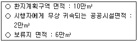
- 20%
- 40%
- 50%
- 60%
- 80%
(정답률: 알수없음)
98. 도시개발법령상 환지와 관련한 설명 중 틀린 것은?
- 환지계획은 환지뿐만 아니라 종전의 토지의 위치ㆍ지목ㆍ면적 등의 사항을 종합적으로 고려하여 정한다.
- 조합인 시행자가 환지계획을 작성한 때에는 시장ㆍ군수 ㆍ구청장의 인가를 받아야 한다.
- 시행자는 환지를 정하지 아니하기로 결정된 토지소유자에게 결정공고가 있은 날의 다음 날부터 당해 토지를 사용 또는 수익하게 하여야 한다.
- 환지계획에서 정하여진 환지는 그 환지처분의 공고가 있은 날의 다음 날부터 종전의 토지로 본다.
- 종전의 토지에 관한 임차권자는 환지예정지 지정의 효력발생일부터 환지처분의 공고가 있는 날까지 환지예정지에 대하여 종전과 동일한 내용의 권리를 행사할 수 있다.
(정답률: 알수없음)
99. 도시개발법령상 도시개발구역으로 지정 가능한 경우는?
- 광역도시계획 및 도시기본계획이 수립되지 아니한 지역의 2만㎡의 주거지역
- 광역도시계획 및 도시기본계획이 수립된 지역의 1만㎡의 공업지역
- 건설교통부장관이 국가균형발전을 위하여 필요하다고 인정한 100만㎡의 자연환경보전지역
- 시ㆍ도지사가 계획적인 도시개발이 필요하다고 인정하는 10만㎡의 계획관리지역
- 시장ㆍ군수ㆍ구청장이 계획적인 도시개발이 필요하다고 인정하는 5,000㎡의 자연녹지지역
(정답률: 알수없음)
100. 도시개발법령상 수용 또는 사용방식에 의한 사업시행과 관련한 설명 중 틀린 것을 모두 열거한 것은?
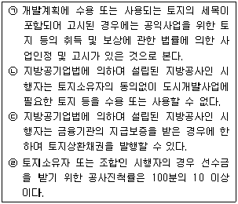
- (ㄱ), (ㄴ)
- (ㄱ), (ㄷ)
- (ㄱ), (ㄹ)
- (ㄴ), (ㄷ)
- (ㄴ), (ㄹ)
(정답률: 10%)
101. 도시개발법령상 자연녹지지역 취락지구 3만㎡에 대하여 토지소유자가 조합을 설립하여 환지방식으로 도시개발사업을 시행하고자 할 때, 이와 관련한 설명 중 틀린 것은?
- 시장ㆍ군수ㆍ구청장이 도시개발구역 지정을 요청할 수 있으며, 시ㆍ도지사가 도시개발구역을 지정할 수 있다.
- 개발계획을 수립하는 때에는 사업대상 토지면적의 3분의 2 이상에 해당하는 토지소유자와 토지소유자 총수의 2분의 1 이상의 동의를 얻어야 한다.
- 도시개발구역 지정절차로서 주민 등의 의견을 수렴하기 위하여 공람을 실시하여야 하고, 필요시 공청회를 개최할 수 있다.
- 도시개발구역을 지정한 후에 개발계획을 수립할 수 있다.
- 도시개발구역이 지정ㆍ고시된 경우 당해 도시개발구역은 제1종지구단위계획으로 결정ㆍ고시된 것으로 본다.
(정답률: 알수없음)
102. 도시 및 주거환경정비법령상의 용어 및 내용에 대한 설명 중 옳은 것은?
- 주택재개발사업은 정비기반시설이 열악하고 노후ㆍ불량건축물이 밀집한 지역에서 주거환경을 개선하기 위하여 시행하는 사업이다.
- 주택재건축사업은 건축물소유자ㆍ토지소유자ㆍ조합이 단독으로 시행하거나 건설업자, 등록사업자와 공동으로 이를 시행할 수 있다.
- 준공일 기준으로 20년까지 사용하기 위한 보수ㆍ보강비용이 철거후 신축비용보다 큰 건축물은 노후ㆍ불량건축물에 해당된다.
- 주민이 공동으로 사용하는 공동작업장, 공원, 공용주차장 등은 공동이용시설이다.
- 도시환경정비사업에 있어서 토지등소유자는 토지 또는 건축물의 소유자와 임차권자이다.
(정답률: 알수없음)
103. 도시 및 주거환경정비법령상 주택재개발사업을 시행하기 위하여 조합을 설립하고자 할 때 다음 표의 예시에서 산정되는 토지등소유자의 수는?
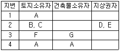
- 3인
- 4인
- 5인
- 7인
- 9인
(정답률: 알수없음)
104. 도시 및 주거환경정비법령상 안전진단에 대한 설명 중 옳은 것은?
- 주택재건축사업을 시행하고자 하는 경우에 안전진단은 공동주택을 대상으로 실시한다.
- 안전진단 신청시에는 토지등소유자의 3분의 2 이상의 동의를 얻어야 한다.
- 시장ㆍ군수ㆍ구청장은 현지조사와 안전진단 전문기관의 의견청취 등을 거쳐 안전진단 실시여부를 결정하고, 이를 지체없이 시ㆍ도지사에게 보고하여야 한다.
- 시ㆍ도지사는 안전진단 결과와 도시계획 및 지역여건 등을 종합적으로 검토하여 주택재건축사업의 시행여부를 결정하여야 한다.
- 시ㆍ도지사는 주택투기 등이 우려되어 주택재건축사업의 시기를 조정할 필요가 있다고 인정하는 경우 재건축사업 시행결정의 취소 등 필요한 조치를 하여야 한다.
(정답률: 알수없음)
1⑤. 도시 및 주거환경정비법령상 인가받은 관리처분계획에 따라 주택이나 건축물을 공급하는 방법과 환지로 공급하는 방법이 모두 가능한 정비사업을 바르게 열거한 것은?
- (ㄱ), (ㄴ)
- (ㄱ), (ㄷ)
- (ㄱ), (ㄹ)
- (ㄴ), (ㄹ)
- (ㄷ), (ㄹ)
(정답률: 알수없음)
106. 도시 및 주거환경정비법령상 다음의 경우 주택재건축사업의 주택공급과 관련하여 최대로 공급받을 수 있는 주택의 수는?
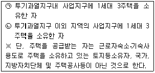
- (ㄱ) - 1, (ㄴ) - 1
- (ㄱ) - 1, (ㄴ) - 2
- (ㄱ) - 1, (ㄴ) - 3
- (ㄱ) - 2, (ㄴ) - 2
- (ㄱ) - 2, (ㄴ) - 3
(정답률: 알수없음)
107. 주택법령상 공동주택의 입주자등이 행위를 하고자 하는 때에 관리주체의 동의를 얻도록 규정한 사항이 아닌 것은? (단, 관리규약에 의하여 관리주체의 동의를 얻도록 특별히 규정되는 사항은 제외한다.)
- 공동주택의 발코니 난간 또는 외벽에 돌출물을 설치하는 행위
- 공용부분에 물건을 적재하여 통행ㆍ피난 및 소방을 방해하는 행위
- 공동주택에 광고물ㆍ표지물 또는 표지를 부착하는 행위
- 늦은 시간이나 이른 시간에 골프연습기ㆍ운동기구 등을 사용하는 행위
- 가축을 사육하거나 방송시설 등을 사용함으로써 공동주거생활에 피해를 미치는 행위
(정답률: 알수없음)
108. 주택법령상 투기과열지구 및 전매제한 등에 관한 설명 중 틀린 것은?
- 건설교통부장관 또는 시ㆍ도지사는 주택가격의 안정을 위하여 필요한 경우 일정 지역을 주택정책심의위원회의 심의를 거쳐 투기과열지구로 지정할 수 있다.
- 분양가상한제 적용주택으로서 주거전용면적이 85㎡ 이하인 주택의 경우 수도권정비계획법상 과밀억제권역에서의 전매제한기간은 5년이다.
- 투기과열지구 안에서 건설ㆍ공급되는 주택의 입주자로 선정된 지위에 있는 자가 상속에 의하여 취득한 주택으로 세대원 전원이 이전하는 경우 사업주체의 동의를 받으면 전매기간 제한의 적용을 받지 않는다.
- 투기과열지구안에서 건설ㆍ공급되는 주택의 입주자로 선정된 지위에 있는 자의 세대원 전원이 해외로 이주하거나 2년 이상 해외에 체류하고자 하는 경우 사업주체의 동의를 받으면 전매기간 제한의 적용을 받지 않는다.
- 건설교통부장관이 투기과열지구를 지정하거나 이를 해제할 경우에는 시ㆍ도지사의 의견을 들어야 한다.
(정답률: 알수없음)
109. 주택법령상 간선시설에 해당하는 것은?
- 주택단지 안의 도로
- 주민운동시설
- 지역난방시설
- 주차장
- 관리사무소
(정답률: 알수없음)
110. 주택법령상 주택거래신고지역의 지정 요건에 관한 규정에서 다음 괄호에 해당하는 사항을 (ㄱ), (ㄴ), (ㄷ)의 순으로 바르게 나열한 것은?(문제 오류로 실제 시험에서는 모두 정답 처리 되었습니다. 여기서는 1번을 누르면 정답 처리 됩니다.)
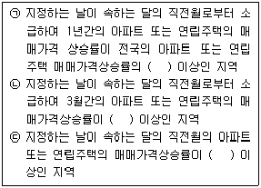
- 1.5배 - 2% - 1.0%
- 1.5배 - 2% - 1.5%
- 1.5배 - 3% - 1.0%
- 2배 - 3% - 1.0%
- 2배 - 3% - 1.5%
(정답률: 알수없음)
111. 건축법령상 신고의 대상이 되는 건축 또는 대수선의 예를 든 것 중 틀린 것은?
- 기존 건축물의 바닥면적 중 80m2의 개축
- 연면적 180m2인 기존 2층 건축물의 대수선
- 연면적의 합계가 100m2인 건축물의 신축
- 기존 건축물의 높이에서 6m를 더 높게 하는 증축
- 공업지역 안에서 연면적 500m2인 2층 공장의 신축
(정답률: 25%)
112. 건축법령상 건축물의 용도를 변경하고자 하는 경우 시장ㆍ군수ㆍ구청장의 허가를 받아야 하는 것은?
- 판매시설을 문화 및 집회시설로 변경시
- 숙박시설을 의료시설로 변경시
- 종교시설을 운동시설로 변경시
- 제1종 근린생활시설을 공동주택으로 변경시
- 방송통신시설을 수련시설로 변경시
(정답률: 28%)
113. 건축법령상 건축허가와 그 제한 및 취소에 관한 설명 중 틀린 것은?
- 21층 이상의 건축물을 특별시 또는 광역시에 건축하고자 하는 경우에는 특별시장 또는 광역시장의 허가를 받아야 한다.
- 허가권자는 숙박시설에 해당하는 건축물이 주거환경 등 주변환경을 감안할 때 부적합하다고 인정하는 경우 건축위원회의 심의를 거쳐 건축허가를 하지 아니할 수 있다.
- 건축허가 또는 건축물의 착공을 제한하는 경우 그 제한기간은 2년 이내로 하되, 1회에 한하여 1년 이내의 범위에서 그 제한기간을 연장할 수 있다.
- 시ㆍ도지사가 시장ㆍ군수ㆍ구청장의 건축허가 또는 건축물의 착공을 제한하는 경우에는 즉시 건설교통부장관에게 보고하여야 하며, 건설교통부장관은 제한의 내용이 과도한 경우에 그 해제를 명할 수 있다.
- 허가권자는 건축허가를 받은 자가 그 허가를 받은 날부터 2년 이내에 공사를 착수하지 않거나 공사를 착수하였으나 공사의 완료가 불가능하다고 인정하는 경우에는 허가를 취소하여야 한다.
(정답률: 알수없음)
114. 건축법령상 건축물의 종류와 그 용도분류가 잘못 연결된 것은?
- 무도학원 - 위락시설
- 주유소 - 위험물저장 및 처리시설
- 야외극장 - 문화 및 집회시설
- 마을회관 - 제1종 근린생활시설
- 안마시술소 - 제2종 근린생활시설
(정답률: 알수없음)
115. 건축법령상 건축물의 면적ㆍ높이 등의 산정방법에 관한 설명 중 틀린 것은?
- 건축물이 부분에 따라 층수를 달리하는 경우에 그 층수는 가중평균 층수로 산정한다.
- 건축면적은 원칙적으로 건축물의 외벽의 중심선으로 둘러싸인 부분의 수평투영면적으로 산정한다.
- 지상층의 주차용(당해 건축물의 부속용도인 경우에 한한다)으로 사용되는 면적은 용적률의 산정에 있어서 산입하지 아니한다.
- 지하층은 건축물의 층수에 산입하지 아니한다.
- 층의 구분이 명확하지 아니한 건축물은 당해 건축물의 높이 4m마다 하나의 층으로 산정한다.
(정답률: 알수없음)
116. 건축법령상 건축분쟁조정위원회에 대한 설명 중 틀린 것은?
- 건축관계자와 당해 건축물의 건축 등으로 인하여 피해를 입은 인근주민간의 분쟁의 조정 및 재정은 건축분쟁조정위원회의 소관사항이다.
- 조정신청은 당해 사건의 당사자 중 1인 이상이 하며, 재정신청은 당사자간에 합의로 한다.
- 조정은 3인의 위원으로 구성되는 조정위원회에서 행하고, 재정은 5인의 위원으로 구성되는 재정위원회에서 행한다.
- 당사자가 조정안을 수락하고 조정서에 기명날인한 때에는 당사자간에 재판상의 화해가 성립한 것으로 본다.
- 건축분쟁조정위원회의 위원이 공무원 신분을 가지지 아니한 경우에도 형법상 수뢰죄의 적용에 있어서는 공무원으로 본다.
(정답률: 알수없음)
117. 농지법령상 농지의 소유제한에 관한 예외규정으로 틀린 것은?
- 토지수용에 의하여 농지를 취득하여 소유하는 경우
- 공유수면매립법에 의하여 매립농지를 취득하여 소유하는 경우
- 지방공기업법에 의한 지방공사의 사장이 농림부장관과 미리 농지전용협의를 완료한 농지를 소유하는 경우
- 농지를 농업인주택과 마을회관 등 농업인 공동생활 편익시설 부지로 농지전용신고를 완료한 자가 당해 농지를 소유하는 경우
- 상속에 의하여 농지를 취득하여 소유하는 경우
(정답률: 알수없음)
118. 농지법령상 농업보호구역안에서의 농업인의 소득 증대와 생활여건 개선을 위한 토지이용행위로서 설치할 수 있는 시설이 아닌 것은?
- 부지가 1,000㎡ 미만인 단독주택
- 부지가 5,000㎡ 미만인 양수장ㆍ정수장
- 부지가 2만㎡ 미만인 관광농원사업으로 설치하는 시설
- 부지가 3,000㎡ 미만인 주말농원사업으로 설치하는 시설
- 부지가 1,000㎡ 미만인 제1종 근린생활시설 중 일용품 등의 소매점
(정답률: 알수없음)
119. 산지관리법령상 산지전용허가에 관한 설명 중 틀린 것은?
- 산지전용을 하고자 하는 자는 그 용도를 정하여 산림청장의 허가를 받아야 한다.
- 산림청장은 산지전용허가를 함에 있어서 그 산지 면적이 30만m2 이상인 때에는 미리 그 산지전용타당성에 관하여 중앙산지관리위원회의 심의를 거쳐야 한다.
- 납부할 대체산림자원조성비가 1,000만원 미만일 때에는 산지전용허가를 받은 날부터 20일 이상 30일 이내에 이를 납부할 것을 조건으로 산지전용허가를 할 수 있다.
- 산지전용허가를 받지 못하거나 그 허가가 취소된 경우, 대체산림자원조성비의 전부 또는 일부를 그 납부자에게 환급하여야 한다.
- 산지전용 변경허가를 받아야 함에도 이를 받지 아니하고 산지전용을 한 자는 5년 이하의 징역 또는 3,000만원이하의 벌금에 처한다.
(정답률: 알수없음)
120. 산지관리법령상 산지에 해당하는 것은?
- 과수원, 차밭, 삽수ㆍ접수의 채취원
- 입목ㆍ죽이 생육하고 있는 건물 담장안의 토지
- 입목ㆍ죽이 생육하고 있는 논두렁ㆍ밭두렁
- 집단적으로 생육한 입목ㆍ죽이 일시 상실된 토지
- 입목ㆍ죽이 생육하고 있는 하천ㆍ제방
(정답률: 알수없음)